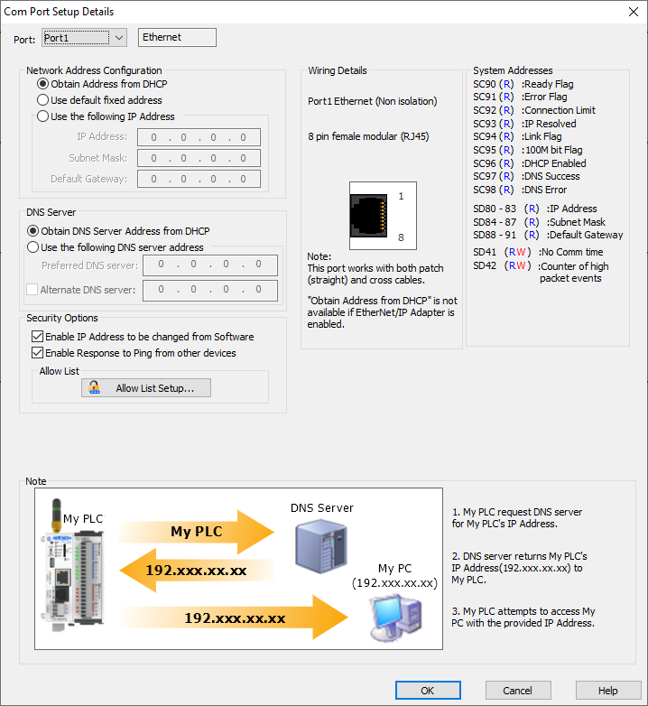

Topic: CL211

| Com Port 1 (Ethernet) Setup |
Topic: CL211
|
The Com Port Setup Details dialog displays current settings of Com Port 1 (Ethernet).
|
|
Note: The Com Port setup will be stored in the CLICK CPU module. This means you MUST download the user project into the CLICK PLC after you made any changes in the Com Port Setup. Changes will be applied at the first Stop to Run transition. |
|

Port: Select Port 1 from the drop down list to populate this dialog with current Port 1 setup.
Protocol: This Port always supports Ethernet Protocol.
Obtain Address from DHCP: This selection enables the PLC to query the network for a DHCP server that will then assign Ethernet Port settings to the PLC automatically if a DHCP server exists on the network. If there is no response from a DHCP server, the PLC will follow APIPA standards and assume an IP address that starts with 169.254.xxx.xxx.
This APIPA-assigned address is not recommended because it may change without notice.
This setting is convenient for setting up a PLC on an established network for programming and configuration purposes.
|
|
Note: This is not recommended for control networks because the IP address assigned by the DHCP server may be changed by the server without warning, causing potential communication issues. | |
Use default fixed address: All of the CLICK Ethernet CPU modules use the following default fixed Network Address when this option is selected.
[Default Network Address]
IPAddress: 192.168.0.10
Subnet Mask: 255.255.0.0
Default Gateway: 0.0.0.0
Use the following IP Address: By selecting the Set Manually option, you can manually Edit the Network Address. Enter a valid IP Address and Subnet Mask for your network. If your device needs to communicate outside its subnet, enter the Default Gateway for your network.
The IP Address is unique for each device on the Local Area Network (LAN). If the IP Address is duplicated anywhere on the network, the PLC will not communicate properly. See your Network Administrator for an available IP address.
Unlike the IP Address, the Subnet Mask should be the same for each device on the LAN that will be communicating with each other. See your Network Administrator for the proper Subnet Mask.
If a router is used to connect the LAN to another network and the CLICK PLC will be communicating with devices on the other network, then this is the IP address of the router. See your Network Administrator for the proper Default Gateway address.
|
|
Note: This selection is recommended for control networks so that the IP Address will not change. | |
A Domain Name System (DNS) server resolves a URL (for example: www.automationdirect.com) into an IP address (for example: 192.168.20.254).
When a DNS server is configured in the project then NTP and MQTT are allowed to use Server Names.
|
|
Note: To configure a DNS server, the Ethernet Port must be configured. | |
Obtain DNS Server Address from DHCP: This selection is available only if DHCP is selected. This selection allows the PLC to query the network for a DNS server, if a DHCP server exists on the network.
Use the following DNS Server Address: Enter the IPaddress of a Preferred DNS Server address, if one is known, instead of obtaining the address from DHCP.
If an Alternate DNS Server is also available, check the box and enter its IP address for use as a back-up DNS server if the first fails to resolve the URL.
Enable IP Address to be changed from software: If selected, then the IP address can be changed with the programming software Browse and Edit tools. Disabling IP address changes increases security by removing that ability for unauthorized users . It will also decrease the chances for accidental IP address changes from authorized users.
Enable Response to Ping from other devices:If deselected, the CLICK PLC will not respond to ping requests. This makes the PLC invisible to pings and thus reduces the vulnerability to deliberate denial of service (DoS) attacks.
Allow List Setup The CLICK PLC can be configured to only allow communications to only specific devices, refusing all other connections. Configurations can include: Specific IP Address, Ranges of IP Addresses, Specific MAC Address, or Ranges of MAC Addresses.